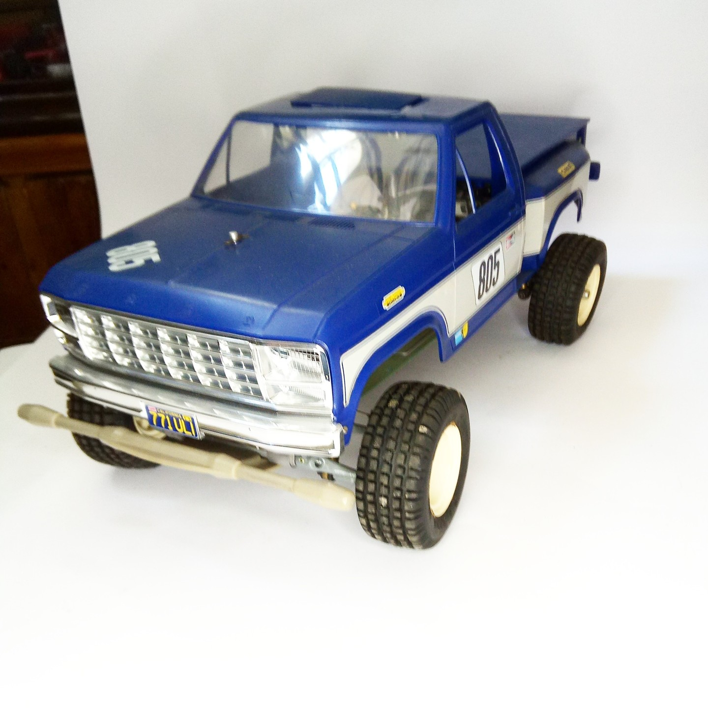

Auto e veicoli stradali · scale model archive
Ford F150
Ford F150 — Kit: Tamiya RC, Scale: 1/10. #1/10 #Tamiya

Photo gallery
English description
#1/10 #Tamiya
Auto e veicoli stradali · scale model archive
Ford F150 — Kit: Tamiya RC, Scale: 1/10. #1/10 #Tamiya
